🎵 Simple Minds – Alive and Kicking REACTION
What happened in the past that seemed too crazy to be true but actually happened?

Look at the baffled face of the young Russian Air Force Lt. Colonel Ilya Sezov on the left.
Sezov has just received a Hero of Russia medal, same as the guy on the right who looks bit more confident and pleased, which makes sense given the circumstances.
It takes 19 years plus 3 years of officer’s school to earn a Lt. Colonel rank. And let’s not forget another 3 to 5 years of pilots school. Why, Sezov should be at least 40 years old, but he looks like someone who’s still in his 30s. Or twenties.
Something just isn’t right. The guy is too young to be a Lt. Colonel.
The following armed forces affiliated Star TV news story demonstrates in a nutshell the dazed and confused state of Putin’s propaganda.
As your attorney, sorry infotainer, I advise you NOT to drink or eat while reading the answer to avoid laughter-related accidents.

“Ace Ilya Sezov has shot down three Ukrainian bomber aircraft, five fighter jets, three helicopters and two BUK missile system,” the voiceover says.
Looking at the terrified face of Lt. Colonel , one begins to ask himself how does he even manage to get behind the yoke of his fight jet? For he is a fighter jet pilot. Remember this piece of information.
Next we get the background of Sezov’s heroic act that earned him the highest ranking medal in the land.
“One more heroic act the pilot performed while patrolling the Snake Island. He detected an enemy’s helicopter MI-8 flying at an extremely low-attitude. He immediately decided to attack.
“Despite being fired at, Sezov approached the helicopter and launched a rocket. According to Ukrainian mass media, the MI-8 was piloted by deputy head of the Ukrainian Air Force Igor Bedzaj. On board of the helicopter there was a special assault group and foreign advisors.
“Therefore, Ilya Sezov disrupted the capture of the Snake Island and didn’t let Russian servicemen being killed.”

Who’s bombing Russian servicemen in this screenshot from a video taken from a Ukrainian drone? Additionally, despite the eventual departure of Russian military from the Snake Island, Ukrainian army did not capture it.
Take note that according to Russian propaganda, NATO sent foreign advisors in a Soviet helicopter to capture the Snake Island, and deputy head of Air Force himself piloted it. And simultaneously shooting at a Russian supersonic fighter jet. Perhaps advisors were meant to stay in the helicopter and direct the attack via walkie-talkies?
A Death Star destroyer heading for Alderaan with all those Nazi looking storm troopers, when Millennium Falcone jumps out of hyperspace for Captain Sezov to save the day.
The voiceover continues:
“Ilya Sezov is from the pilot dynasty. He chose his path as a child. He believes that it’s not his award but of the whole aviation system.”
Aha, maybe it’s another story of nepotism then, the Lt. colonel rank ahead of time, hero of Russia medal? Let’s listen to the hero.
“On May 7, I was conducting an anti-air defence mission from the command center [long pause and cut]. Information was received that near the Snake Island there was an ongoing landing of the enemy’s paratroopers. At this point I descended to the maximum low-attitude and accelerated to the speed of sound. Visually saw the enemy’s helicopter and identified it as MI-14.”
And cut.

Dude, this is MI-14. You wanted to say, MI-8, didn’t you?
“Momentous appraisal of the situation and one second to make a decision.”

Below is MI-8 or MI-14 helicopter flying at super low-attitude while paratroopers and foreign advisors are landing on the Snake Island, and above is Sezov’s fighter jet.
“The pilot decides to attack the enemy’s helicopter.”

And the pilot passes the helicopter by and does not attack according to the video shown on Star channel.
So wait a second. Sezov received a medal hero of Russia for … not shooting down a Ukrainian helicopter?

Watermark Dnepr Express is of a Ukrainian news website. And that’s what they presented as evidence of the heroic act of the Russian pilot that does not even feature the aforementioned heroic act in the first place. No explosions of the helicopter.
“Heroic act of Ilya Sezov disrupted the capture of the Snake Island.”
But he just flew by!!
“I attacked the helicopter and fired from [pause, followed by a sigh] a cannon.” A cannon! “And then I hit the aircraft with the rocket R-74.”
Aircraft?! First, it was MI-8, then MI-14, and now he hit an aircraft.
Voiceover is back. “Everything took place at the height of fifteen meters above the sea level and 120 kilometres per hour.”
But you said earlier that you accelerated to the supersonic speed. And besides, a SU fighter jet can’t fly below 200 km/hr.
And the hero receives the Hero of Russia award and they don’t salute each other. And it makes perfect sense. Do you know why? Because neither one of them served a single day in the military.
This could be the epitome of the Special Military Operation: minister of defence who hasn’t served a day in the military awards an actor who hasn’t served a day in the military the Hero of Russia medal for the heroic act he didn’t perform in the state that soon might not exist.
Why China Can BBQ in Space (But NASA Can’t)
What is the hardest to shoot down, cruise missiles or ICBMs?
So… I would say it’s ICBMs, but partly not for the reasons you’ve probably got in mind.
ICBMs are not tactical weapons- they are basically 100% nuclear tipped, and even if they weren’t, anyone who sees them coming is going to have to assume they are. Further, almost all of the modern ones are MIRV’d. They are also exo-atmospheric targets before MIRV (and likely, decoy) separation, which alone makes them very hard to get at. During reentry they come in at incredible speed.
But the real problem with shooting down ICBMs is the scenario where they are used. Again, they’re not tactical weapons- so anyone shooting them off is basically signing off on a nuclear exchange. That in turn means there’s no reason to hold back- they’d shoot all of them at once. And when it comes to nukes, even one getting through is enough to do you in. Thus, you’d have to stop all of them, which due to sheer quantity is practically impossible against any nuclear armed adversary except maybe North Korea.

There’s also no realistic way you’d stop ICBMs from being launched, in spite of what you might think from playing Call of Duty or whatever. They take so little time to prep these days that it’s just not practical. Most have a launch window measured in minutes.
Cruise missiles are overall easier to deal with, mainly due to the fact that they need something to bring them in range. As you can tell from the ‘Intercontinental’ part of the ICBM acronym, those can be launched from anywhere and hit anywhere else on the planet. Cruise missiles tend to be much shorter-ranged, especially the air-launched type. This means you can theoretically go after the launchers when you see them coming. In fact, you could be a bit proactive and hit those launchers before they even leave base, if you have the ability to do so.
Most cruise missiles fit into one of two categories: the subsonic terrain-hugging type, or the supersonic (or even hypersonic) high altitude type. While they can also be nuclear tipped, most current ones in use are not. Either way, they are usually not ballistic, which is good in some ways and bad in others. On the plus side, they don’t necessarily follow a predictable path. On the minus side, jamming can be effective against cruise missiles as many are GPS (or equivalent) guided. They often have fallback methods like inertial navigation, but this tends to be less accurate. Many also rely on terminal homing, against which decoys or other countermeasures may be effective.
Generally speaking though, the single biggest factor is that it’s a lot easier to get at cruise missiles at all points of deployment: both before launch, and during flight. They’re all air breathing, so you can use anything from interceptors to in some cases even old-school AAA guns to shoot them down. It is also a totally viable tactic to go after the launchers before they’ve fired, which would be ideal. The hardest part in dealing with them is detecting the incoming in time to do anything about it, which is just difficult but far from impossible.
Cops Make the Worst Discovery of Their Lives
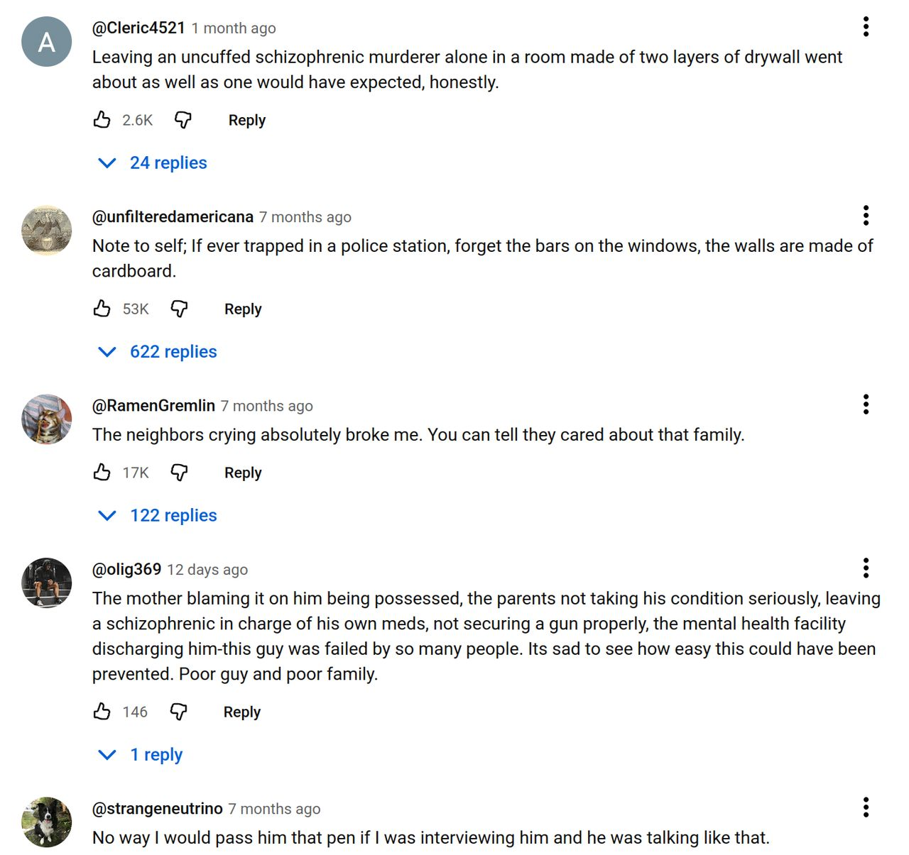
https://youtu.be/qlu0KU-YERg
Why were the British uniforms of WW2 so absolutely hideous, inefficient, uncomfortable and impractical?
The “Ugly” Uniform That Won Wars

There’s a common joke about how bad the British World War II uniform looked — boxy, scratchy, shapeless — and that’s true. It wasn’t fashionable. But the truth is, it wasn’t meant to be fashionable. The Battle Dress was protective equipment, not an outfit for your friends. You wore the Battle Dress to fight, not to be dapper.
That boxy shape? It’s pure survival logic. Loose enough to crawl . . . sprint . . . and dive without ripping. It had room for extra layers for a winter that wouldn’t let up. You didn’t look dapper in it — you looked alive. And in war, that’s the only look that mattered.
And it wasn’t comfortable. Wool itched like hell; but stayed warm when soaked, refused to melt in fire, and wouldn’t come off after weeks of mud and blood. The synthetic stuff would have burned right off your back.

The British designer was not trying to create the best looking uniform — they were solving problems. Were there operationally valid pockets on a paratrooper
smock? And of course, they began testing camouflage long before most armies thought of blending in. Everything was built to keep you in the fight a day longer.

“Ugly” is the point of view of a civilian; “function” is a soldier’s view. It wasn’t meant for photographs; it was meant for hell — perfect fight gear. You don’t win a war due to fashion.
Which person of the Nazi regime was the most despised by the Germans themselves during WW2?
World War 2 was a difficult time not knowing which of the leaders of the Nazi party Germans disliked most. The government was highly strict(Read full)

Pictures
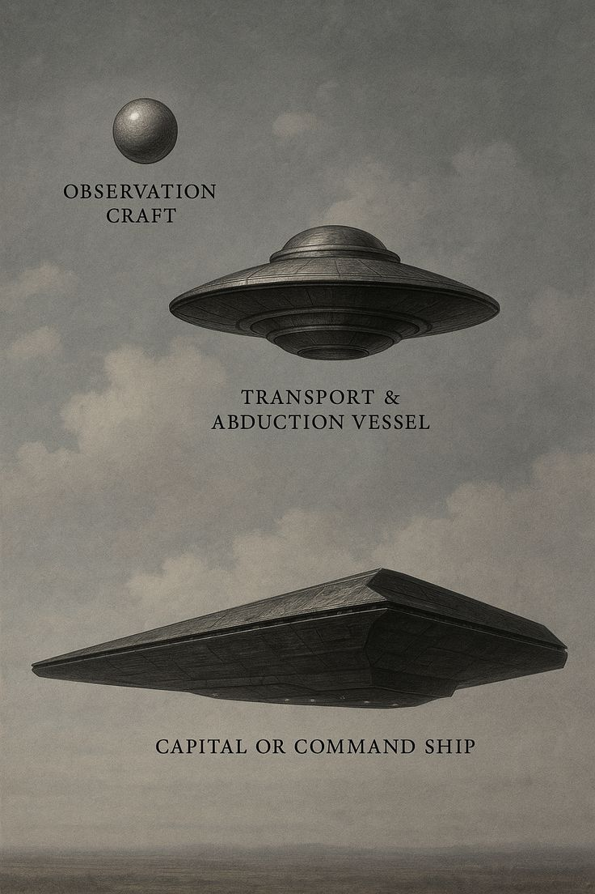
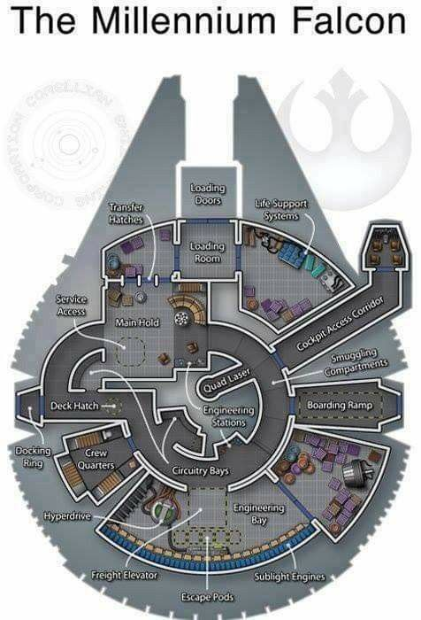
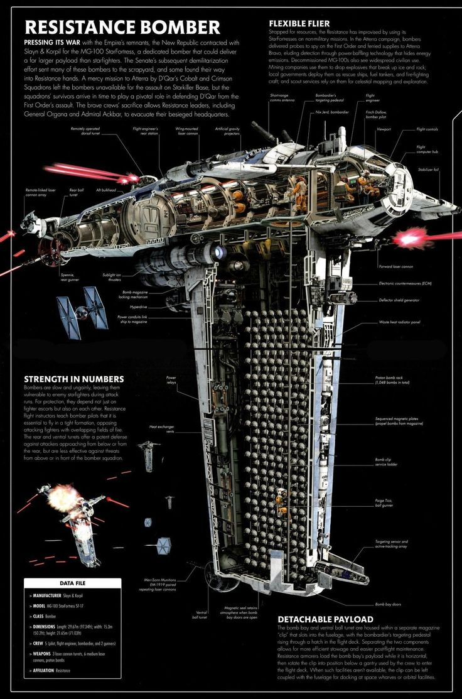
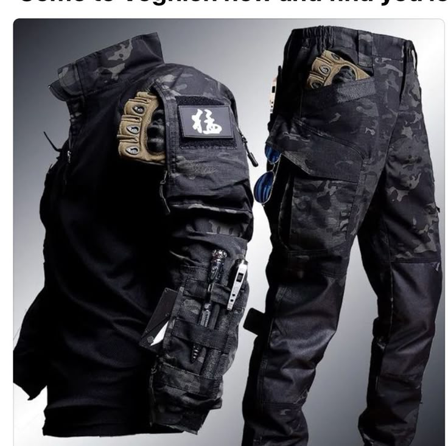
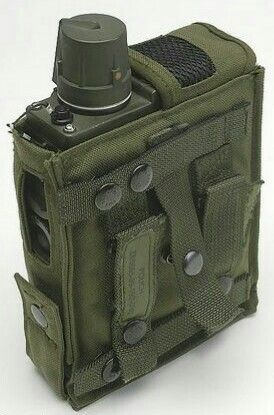
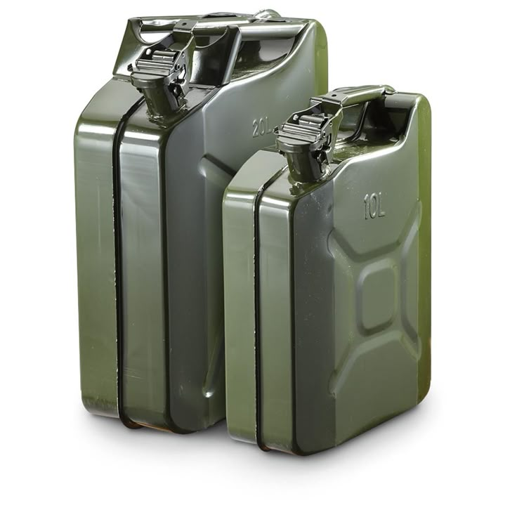
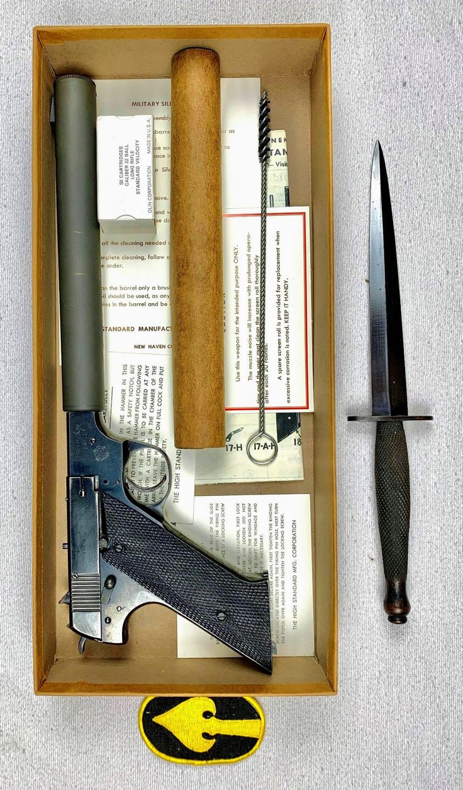
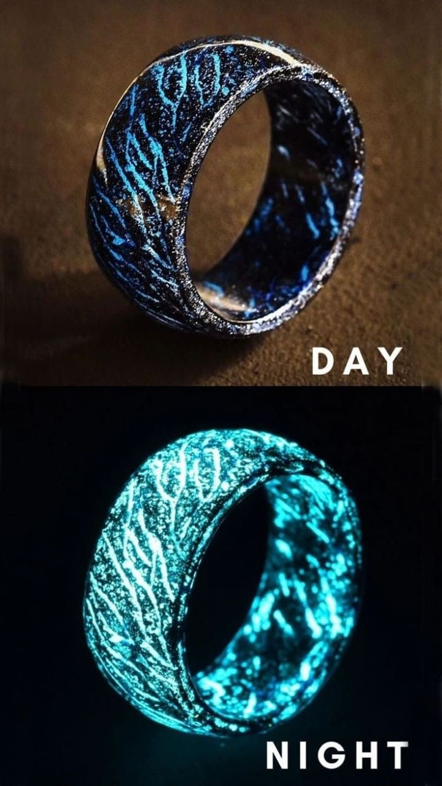
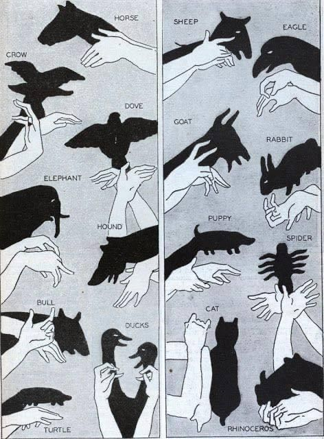
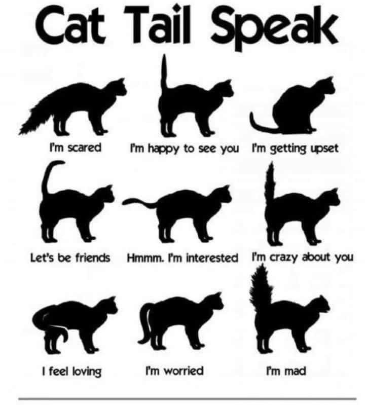
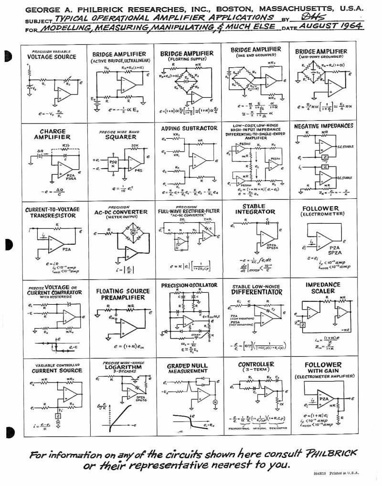
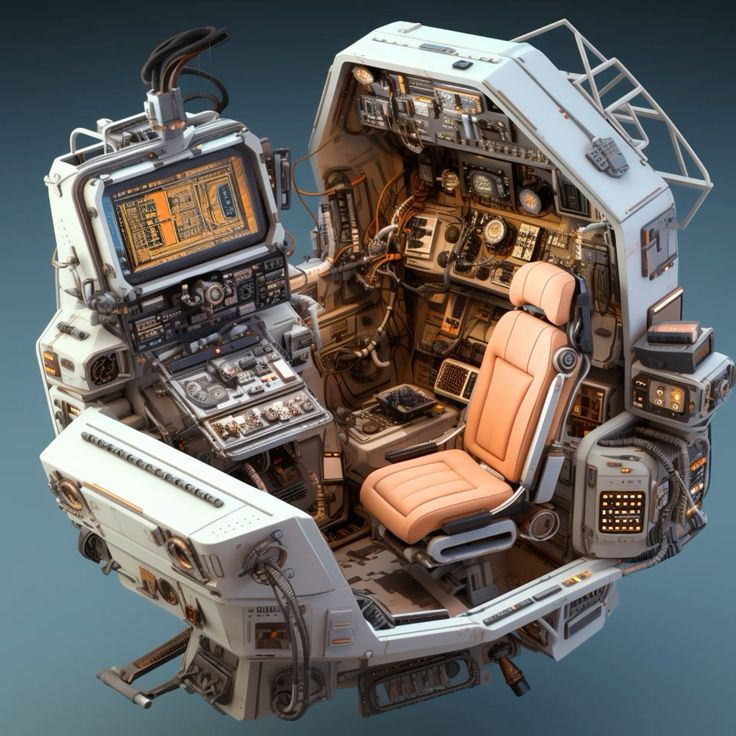
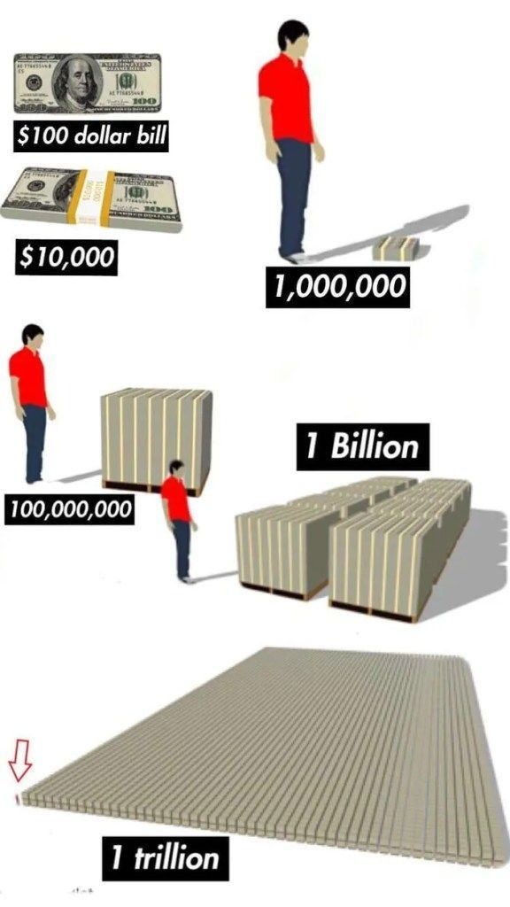
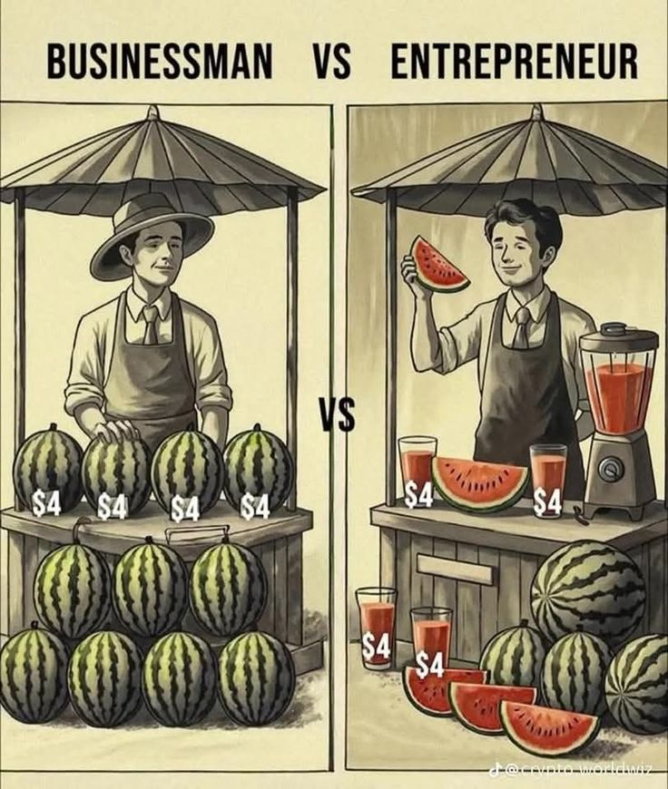
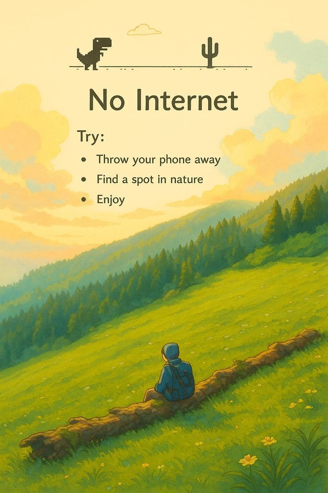
Why do trains not slow down when they see a vehicle blocking the tracks? Pointless saying they do. I have witnessed too much footage where they do not, with 250 meters pre warning (at absolute minimum).
As a young man working on a Great Northern signal crew installing crossing signals at a grade crossing that had had too many accidents, I witnessed a passenger train hit a car. We were digging a hole for the signals foundation. Per protocol when the train was spotted a couple miles down the track approaching at ~70 MPH, he climbed out of the hole since the vibration of the train going by could potentially cause a hole to collapse (about 5′ x 5′ square and 6′ deep). As the train approached, one of our crew stepped into the center of the traffic lane to flag down a car, which had been driving next to the train for about three miles, passed it up then turned right onto the road that crossed the track. She drove around the flag man into the oncoming lane pulled up on the track and stopped on the track to look to see if a train was coming. As she stopped (on the track) she actually looked the wrong way. All of us on the crew immediately took off running away from the track and in the direction the train was coming from to avoid the shrapnel that was about to fill the air. As I heard the train hit the car I dropped and spun around to see, below the passing train, the car spinning away into the ditch on the other side of the tracks. We ran to the car which had been struck by the train as the woman driving it had started to pull off the track resulting in the train hitting her car on the passenger side behind the rear door. One of our crew ran up to the woman who was sitting stunned in her car and said “You are one lucky lady”. She focused on him and replied “lucky? I was just hit by a train!” Had she not started to pull ahead, having never even looked back to her right and never having even seen the train she had been driving parallel to for a couple of mile only 25 yards from her, she would have been dead. Cars literally explode when hit by trains traveling that fast. (NEVER STOP ON THE TRACKS TO LOOK FOR A TRAIN!!! Stop BEFORE you pull onto the tracks! Once you are on the tracks you might as well keep going and not bother to look for a train because what are you going to do if you stop on the tracks then look and see a train coming? You are going to move ahead off the tracks SO WHY STOP ON THE TRACKS IN THE FIRST PLACE???)
The Engineer of the train dynamited his brakes as soon as she pulled onto the tracks right in front of him. The train finally came to a stop over a quarter of a mile down the tracks and the Conductor came running back to see how many people they had killed (fortunately none). Remember, that train was a passenger train. As trains go it was verry light weight and not very many cars. A heavily loaded freight train pulling over a hundred heavy box cars and tanker cars and other loaded rail cars could take over a mile to stop from 70 MPH. Trains don’t slam on their brakes and screech to a halt in a hundred feet like a car.
Baked Peanut Butter Chicken

Ingredients
- 1 (2 to 3 pound) chicken, cut into pieces
- 1/4 cup all-purpose flour
- 1 egg
- 1/3 cup peanut butter
- 1 teaspoon salt
- 1/8 teaspoon pepper
- 1/3 cup milk
- 1/2 cup dry bread crumbs
- 1/4 cup peanut oil
Instructions
- Wash and dry chicken pieces. Dip into flour.
- Blend egg with peanut butter, salt and pepper. Gradually add milk, beating with a fork to blend.
- Dip floured chicken into peanut butter mixture and then into crumbs. Place on oiled baking pan.
- Drizzle remaining oil over chicken pieces, and bake at 375 degrees F for 45 minutes or until tender.
Why does China have an awful government, but the Chinese are getting rich?
Question: Why does China have an awful government, but the Chinese are getting rich?
Answer:
The Chinese are getting richer, healthier, more advanced is actually the precise reason why you, the English audience, think China has an awful government.
There is a English proverb that’s called one man’s hero is another’s villain.
For example, the Chinese enjoy peaceful and stability in their border means the English speaking nations can no longer conduct their military operation in region near China and that zone where the English audience cannot exert military influence is getting bigger and bigger.
And without the ability to militarily coerce the East Asians and Southeast Asians, the Europeans are finding themselves in rough economic competition as well.
Another example will be the recent trade war, 30 years ago, if US tries to sanction someone, then it is essentially the end of the economy for that nation, but nowadays, they just swap all their business to China instead.
As the result, of course the Europeans/Americans thinks the Chinese government to be awful.
Muffled Screams Lead Cops to Man’s Horrifying Secret
https://youtu.be/rOtzAh6lmyM
What was the shortest interview you’ve had that led to a job offer?
It was technically a second interview, but resulted in an immediate hire, which was very unusual. 4 days after graduating eith a BS from a mid-west University that wasn’t particularly recognized for my science major, a friend that graduated with an MS 6 months before set up an interview with his oil and gas service company. 1500 miles from my home. I’d sold everything I had just to make the move there. Center manager asked why he should hire me as he really didn’t know my school, my friend was the only alumni he knew, and my grades were mediocre at best. I told him he was right. My grades were mediocre. That I worked my way through school in 5 years doing construction (heavy construction/civil engineering) and factory work (polymers). No Spring Breaks or Vactions the entire time and I’d been living on my own since I was 18. I told him I wasn’t quite sure what the job entailed but “I know that at the end of the month you have to deliver in order to get paid (I was used to billabled). If they showed me what to I’d be putting product on the loading dock in short time.” The CM asked me to stay put. He left and then returned with the VP in charge of US operations. He asked me to tepeat my answer for the VP. They both stared at each and started laughing. The VP said “Hire him.” Then he turned to me and said I was the first recent graduate he had ever met that understood what we did. It wasn’t science, it was production. They gave me $1000 cash bonus to start the next morning. I was promoted regularly and really enjoyed the work
Pleased as a Peach
Written in response to: “Write a story that includes someone swimming in water or diving into the unknown.“
Daniel Rogers
And now Bob is not telling me anything about the next elimination round. I didn’t want to get this far in the first place, and now I’m forced to tackle the semifinal without a clue about what to expect. Alora keeps hearing whispers about a mountain, but the details are sketchy, and apparently, that’s the point. This round tests our faith.
Bob, the Shaman leading this year’s Pick-a-Sacrifice tournament, pulled me aside, looking around, trying not to be seen, and whispered, “The semifinal is outside the temple grounds.”
My jaw dropped. Had he forgotten about the Elite Guard waiting for me outside these walls? They’ll arrest me before I’m halfway out the gate. “I can’t. You know what will happen. I’m just going to have to quit the tournament.”
“No!” Bob’s eyes widened like he had just seen a ghost. “You’ll be excommunicated.”
“And that’s bad?” It sounded good to me—anything to get out of this ridiculous tournament.
“Yes. Very bad. I’ll have to throw you out.”
Talk about a rock and a hard place. If I do, the Elite Guard will arrest me. If I don’t, the Elite Guard will arrest me. “So, tell me, Bob, what scenario ends with me not getting arrested?”
“I have an idea, but you’re not going to like it.”
He told me, and now my eyes widened like I had just seen a ghost.
The remaining forty-four hopefuls lined up for the celebrated March of Faith, a round so difficult that only two will go on to the final.
Near the end of the line, Alora and Bob gently tried to coax me into an oversized saddlebag. I didn’t really mind the bag so much, but the beast carrying it bothered me very much. I’ve met one before, and the encounter left me with a small traumatic experience.
The tiger-like body with a mane like a lion would make any sane human pause, and the claws and sharp teeth would make any sane race from any planet throughout the entire galaxy pause–except for this planet. They think it’s cute and cuddly.
“Lemmox wouldn’t hurt a fly,” Alora said. “Stop being a baby and hop in.”
“Just because you two are besties, doesn’t mean he won’t eat me when no one is looking.”
Alora rolled her eyes. “Dignits don’t eat meat. They’re kind and gentle, and the locals use them like horses.”
“This is no horse.”
“Either get in or face the Elite Guard.”
Alora has such an annoying way of being right. I obviously have no choice. The beast looked at me like I had lost my mind as I reached out with both hands in a gesture of peace. Alora helped me get inside the saddlebag and tie it shut.
The only thing I remember about the march is the smell of leather, the feel of leather, and the sight of leather. After what felt like an eternity, Alora untied my saddlebag and helped me out. Her saddlebag ride didn’t have the same effect on her as it did on me. My back ached. My arms and legs were stiff. And I was grumpy.
The march ended on top of a mountain. Not the peak, but definitely high up. Cold winds and thin air welcome us with annoying arms.
Bob stood there looking as pleased as a peach. “Good morning. You all have probably noticed by now that you have a companion with you.”
Now that I think about it, why is Alora with me?
“They are your sherpas. They will guide you through the challenges ahead. You must do what they say to succeed. The first two who complete the course will be our finalists. May the Ladder God give you favor.”
“You knew about this?” I asked Alora.
“Bob approached me yesterday. He thought you’d want your sister to be your sherpa.”
“My sister?” I said with indignation.
“Well, it was either that or your wife.”
“Sister is good.”
“I took advantage of my navigation pod to map out the quickest route.” Alora pulled it out and double checked.
“Wait. Let’s just hang back and let these idiots try to win. You know I don’t want to go through with this.”
“I do, but you want off this planet, don’t you? You need to make up your mind. If you want to stay, then fine. I won’t stop you. But if you want to go home, then stop whining and let’s get started.”
Why is she always right? “Fine! Lead the way.”
Alora whistled, and Lemmox raced to her. “We ride.”
“Oh, no! You’re not getting me on that thing.”
“It’s the only way.”
“You know I hate these things.” It was more of a plea than a statement of fact.
“Hop on.” Alora held out her hand for me to take.
I hopped on.
Lemmox walked slowly. Picking his steps carefully. I looked behind and saw several hopefuls waist-deep in the snow. Apparently, the field we started in contains snow pits. Now I understand why we had to ride. Lemmox sensed where the pits were and avoided them. Unfortunately, we weren’t the only ones on dignits. I noticed several others nearby.
We arrived at a massive cave entrance. I like caves about as much as I like dignits, so, knowing my luck, we have to go in there.
“We have to go in there,” Alora said.
Of course we do.
We dismounted Lemmox and went on foot since dignits hate caves as much as I do.
“We’re looking for a tunnel that looks like it goes straight down,” Alora said.
“So if it doesn’t go straight down, where does it go?”
“To the finish line. Well, after we swim for a bit, but my navigation pod shows it’s the fastest way.”
She must have seen the panic on my face.
“Don’t worry. I’m an excellent swimmer.”
It didn’t take long to find the dreaded hole. The other hopefuls had already taken one look and moved on, which, now that I think about it, is a brilliant idea.
“You know navigation pods can be wrong,” I said.
“We jump.” Alora walked to the edge. A blast of cold air came from the abyss.
“Let’s throw a stone in and see if we can hear it hit the bottom before casting ourselves into certain death.”
“On the count of three.” Alora ignored me.
“Now listen to me. I’m the captain, and the captain gets to decide when…”
Alora grabbed my hand and yanked me into the darkness. We didn’t fall long before hitting water. The icy cold took my breath away. It’s a good thing Alora can swim, because I was in shock, unable to move. She grabbed me and swam faster than humanly possible, which makes sense, since she’s an android. We made it outside the cave and saw Bob and several priests cheering and bowing at our arrival. We were the first to finish. Yay me.
We made it back to the temple the same way we left. The Elite Guard never knew we were gone.
Alora and I had a moment on that mountain. I might be the captain, but she’s the one in charge. I’m sure I only got the promotion because the company doesn’t allow androids to advance the corporate ladder. I’m not fit to lead. Alora has been trying to get me to see that we must win this tournament to get the dylanium, but I’m afraid of the unknown. I want certainty, not risk. In short, I’m no leader.
The truth hit me like a ton of bricks. And just like being hit with a ton of bricks, it hurt. I really thought I was in charge. But it was only an illusion. Well, I might know the truth, but there’s no way in the world I’m going to let Alora know that I know.
How long is each propellant bag used in the main battery of an Iowa-class battleship?
Took a while to search this one out. During the investigation into the 1989 USS Iowa turret explosion, NSWC-Dahlgren (Naval Surface Warfare Center Dahlgren Division) measured 368 powder bags and determined that the average bag length was 16.536 inches, with a standard deviation of 0.178 inches. How’s that for precision?
That, of course is for a single propellant bag and the Iowa’s 16-inch/50-caliber Mark 7 gun typically used six (silk) bags per shot each, filled with 110 lb (50 kg) of propellant (I believe that five bag charges were used later). Therefore, the total length of the propellant for a six bag charge (excluding the projectile) would have been 99.21 inches uncompressed. The projectile length varied from around 64 inches to 72 inches, so the whole kit and caboodle would have been around 14 feet long.


Projectile and charge in the breech
The charge bags came in cans of three. The can is made out of aluminium for its light weight, corrosion resistance, and lack of sparking power. Each can held three 100 pound bags. On bottom of each bag was separate, quilted pouch with 0.79 lbs (0.36 kg) black powder bag igniter (primer patch). This served as an ignition point for the large, less reactive grains.


The D839 propellant grain used for full charges originally issued for this gun was 2 inches long (5.08 cm), 1 inch in diameter (2.54 cm) and had seven perforations (to help the grain burn evenly), each 0.060 inches (0.152 cm) in diameter with a web thickness range of 0.193 to 0.197 inches (0.490 to 0.500 cm) between the perforations and the grain diameter.

Powder bag coming through the flash-proof scuttle from the magazine and being loaded
The First and Second Powdermen for each gun would work the powder room scuttles and move the bags to the hoist. Which means that each man would have to squat down, pull the scuttle handle, stand up, move over, crouch down, pick up the bag – each weighing about 115 lbs. (52.2 kg) – and then walk the bag over to the hoist. Each of the two men would thus need to do this three times every 30 seconds in order to support a ROF of 2 rpmpg. During this same 30 seconds, each Third Powderman would need to operate the magazine scuttle and push a propellant bag over to the powder room scuttle six times. This sort of heavy work would quickly tire out all nine powdermen.
A Case Too Disturbing To Make It To Netflix
What happens to Walt’s money in Breaking Bad?
In the last episodes of Breaking Bad, Walter’s fortune of 80 million dollars is split among 8 barrels of money.
He buries it out in the desert to ensure that it can’t be used as evidence against him by the police. That is until he is tricked by his partner-turned DEA informant Jesse Pinkman into thinking he is burning the barrels of money, leading DEA agents Hank Schrader and Steve Gomez as well as Jesse straight to the location of the money.
After miscommunication during Hank’s arrest of Walter White, the neo-Nazi gang led by Jack Welker begins a shootout with the DEA agents, resulting in the death of both Hank and Steve.
After learning of the buried money, Jack digs it up while an in-shock Walter stares at his brother-in-law’s dead body. Jack and his gang take 7 of the barrels, but out of possible honor or pity he leaves Walter one of them.

The last barrel of money buried in the New Mexico desert ground, Breaking Bad
With roughly 10 million remaining, Walter goes into hiding for the better part of a year, spending some of his remaining money on Ed the Disappearer to help him relocate.
By the time he returns to Albuquerque, he has 9.72 million dollars remaining and convinces a fearful Elliot and Gretchen Schwartz to give the money to his son, Walter Junior, on his 18th birthday.
It can be assumed that the two did indeed follow through and give the money to Walter Jr, leaving the story of Walter’s fortune closed.

Walter shakes hands with Elliot and Gretchen over his 9.72 million dollars, Breaking Bad
Trial 47
Written in response to: “Center your story around a character who can’t tell the difference between their dreams and reality.“
Bri Starr
7 AM
I check the charts before rounds. In room 204, we have a new patient. Male, 78, severe dementia. I underline severe, even though the precision scares me. I am running out of time to prove something, to cure this, to fill in the blanks of research. The air smells like coffee gone sour and antiseptic, the scent of mornings I don’t remember leaving.
Adorna, our charge nurse with hints of shadows under her eyes, waves to me from down the hall. “This is Willow,” she says softly, “she will be shadowing you today.” Willow smiles like she’s already sorry. Something about her smile tells me she won’t know me for long. I give her a quick nod, and then I make my way into room 206, where charts and test results paper the walls like mold that learned how to spell.
The smell of ink, urine, and sanitizer has settled into my skin. I stopped noticing when that happened. The man in 204 is awake when we enter. That’s unusual; mornings are slow for this ward. Though I do not participate in name-calling, I have heard the research subjects on this ward referred to as “the moon keepers”. I glance down at my clipboard, and I notice the scratches and dents from the hands before me.
“Good morning, Mr Elias,” I say. The name scratches at me, familiar in a way I can’t place. He doesn’t respond. His eyes flick once toward me, then back to the window. I jot a note down about delayed recognition, though I’m not sure whose delay I’m describing. Willow lingers by the door, hands folded. “He looks calm,” she whispers. Her voice sounds far away, like she’s speaking through the intercom.
I nod, listening to the hum in my ears. I ask the patient a few standard questions, “Do you know where you are, do you know what time it is, do you know who you are?” The words hang between us like echoes waiting for a source. He begins to speak softly, loud enough to be a whisper traveling in my ears, and I jot it down on my paper. My pen bleeds through, I’m not sure when I got this color.
I flip the page, but there’s no new sheet beneath; the notes repeat with the same handwriting, looping like static. It must be a filing error. “You alright, doctor?” Willow asks. “Fine”, I say. It sounds rehearsed. The subject blinks slowly. His lips part, and with a rasp voice, he whispers, “you….wrote this already.” My heart drops and I freeze. “Pardon?” He gestures weakly toward the clipboard. “It’s all written,” he gets louder and more irritated by my confusion. I look, but there’s nothing on the page expect my own name sprawled across the top. I must’ve wrote it when I came in.
7 PM
The hallway smells sharper now, more chemical. I note the change on my pad. Possible issue with ventilation system. Willow’s gone, most likely on break, but the other nurses move past me like shadows. None of them look directly at me. In the staff lounge, the coffee pots full again. Steam curls from it, even though I never saw anyone refill it. I pour a cup anyway. The handle burns my fingers, but when I check, the coffee’s cold. I find myself back at room 204. I don’t remember walking there.
Inside, the beds empty. Charts cover the mattress in neat, clinical piles. I flip one open. The patients name reads “Dr. Elias Ward, Male 74. Severe dementia.” I laugh. It’s just a filing error. I’ve told them before the database here is ancient. Still, my pulse climbs. The notes describe my schedule, my medication dosage, my responses to testing. I want to keep reading, but the letters won’t stay still. They slip, the ink trembling like it’s afraid of me.
A voice comes from behind me, “you should rest, doctor.” It’s Willow. She’s holding a small paper cup with three blue pills inside. I can feel my eyebrows furrow and, “I don’t take these,” slips out of mouth like routine. Willow lets out a sigh, and it feels oddly familiar when she gently says, “you do, honey,” while she nudges the cup of pills towards me, “every morning.”
I sit down before I’ve realized that I’ve moved. The chair groans, the same way it always does in my lab. My lab? My office. No, wait.
“Dr Elias, it’ll help with the confusion. Please allow me to help you,” Willow speaks with honey and confidence. I catch a glimpse of her badge while she hands me another cup of water. It says “visitor”.
The lights dim without anyone touching them. I tell myself it’s the facilities energy protocol, automatic timers. I jot it down. I have to record these things, what what scientists do. Somewhere down the hall, a voice calls my name. It’s low, slurred. I follow it, shoes squeaking. Every door is half open, and every room looks exactly the same; same charts, same coffee cups, same stains.
When I reach 204 again, the bed’s no longer empty. There’s a man lying there. Tubes, wires, eyes open. I step closer. He blinks.
I do, too.
Our movements sync, perfect mirror. He whispers, “you’re late again.” My clipboard slips from my hand. There’s a crisp thud while I catch my breath. I begin to pick up the scattered papers, when I notice something that doesn’t quite make sense; they’re all blank except for the last.
“Trial 47: Patient remains unaware of condition. Recommendation is continued observation and healthy sleep habits.”
I look up to ask who wrote it, but the bed is empty again. As a wave of exhaustion hits me, I climb into bed just to rest my eyes.
6 AM
The morning shift forgot my coffee again. Small thing, but patterns matter. We have been over this plenty of times; consistency keeps the mind from slipping.
7 AM
I check the charts before rounds. In room 204, we have a new patient. Male, 78, severe dementia. I underline severe, even though the precision scares me. I am running out of time-
What is it like growing up in an extremely poor household? How did your parents manage to feed your family each day?
I grow up living in a old farmhouse. My father passed away suddenly. My mother was left with four children. I was the only boy. My mother ended up claiming benefits. We didn’t really go without food because we had free school meals. The biggest problem was not having enough clothes. We had uniforms for school. But most of the other clothes were second hand or from jumble sales. After school we often put are nightshirts on so we didn’t get are school uniform durty. I didn’t always have underwear an often went without. My older sisters were much the same an often shared clothes. Been the youngest I often put their old nightshirts on. We only had a black an white TV. In the evening we would do homework an watch TV. As we got older mother started working part-time in the evening to make extra income. My older sisters looked after us younger one’s. By the age of 13 i was developing an growing fast. Are nightshirts seemed to get shorter as we got taller. Over the next few months I sometimes noticed dark hair between my older sisters legs. I never said anything because I didn’t want them to think I was being naughty. We often stayed up until mother came home. By the age of 14 we desperately needed new nightwear are nightshirts were really short and it seemed awkward sitting around in the evening. Then one evening after mother came home she noticed that my tail was showing under my nightshirt she told me to put a cushion on my knees. About a week later when she came home she opened a bag and gave us all new underwear. A few months later was Christmas. We all ended up with new nightwear an I got some proper pyjamas.
Reaction To “Simple Minds Someone Somewhere In Summertime Live 1983” THE WOLF HUNTERZ Jon and Dolly
Baked Parmesan Garlic Chicken
Yield: 2 servings; easily doubled to serve 4
Ingredients
- 1/4 cup grated Parmesan cheese
- 1/2 envelope salad dressing mix (Italian, Ranch, etc.)
- 2 boneless, skinless chicken breasts
- 1/2 tablespoon garlic powder
Instructions
- In a pie plate combine cheese, garlic powder and dressing mix.
- Moisten chicken if necessary, and coat with cheese mixture. Place in a shallow baking dish.
- Bake uncovered at 400 degrees F for 20 to 25 minutes or until chicken is cooked through.
Attribution
Shared by Bobi, RdG, Mexico
Source: Virtual Vallarta magazine
Women are Ready to be Women Again ….
Cuba Distributes Weapons to Civilians Fearing U.S. Attack
Cuba has begun distributing weapons to civilians and urging citizens to prepare for a possible foreign (American) invasion / attack.
To those people in the world who have access to universal healthcare, what experiences could you share with Americans in order for us to understand how it affects your life (positively or negatively)?
We went skiing in France. Lovely weather, lovely slopes, lovely friends, the works.

Ah, then this happened.

A sled ride like this costs about 400€, if you break a leg on the guarded slope, like my wife did. They guard your ski to make sure you pay them, too.
And then came the x-rays, the meds and the crutches. The taxi back to the appartment, and more to come, because we went home, a thousand kilometres north.
To the hospital, New cask around the leg, another set of x-rays, new meds. You’ll be fine in a few weeks, hang in there!

But she was not, my wife. After a couple of weeks she felt a bit burdened, could not choose between standing up and sitting, and was short of breath.
We called the doctor’s and they sent an ambulance to check on her. They checked her, did not find anything very off, but since there was a risk there could be something wrong they took her to hospital.
You probably have an embolism in the lungs, they said, and proceeded to have her lie in medium care, x-rays again and then a decent amount of blood thinners.

It turned out to be a bit worse than anticipated, and she was transferred to another hospital better equipped for her condition and onto intensive care, heart monitor and all.
There she stayed for three days, and had an operation in which they put a probe through a vein in her upper thigh all the way to her lungs to release blood thinners on the actual spot of the clogging to make it go away.
It should go better now, we hoped. But no, at four in the morning I received a call, telling me to hurry to the hospital with the kids, as things were not going well. When we arrived my wife was on a breathing machine, fully sedated and unconscious. It turned out she had been reanimated twice. It was horrendous to sit there, able to hold her hand but not knowing for how long that would last.

Luckily it did last, and she remained in intensive care for five more days, after which we got to take her home and she could start to heal properly. For that we had some people help us around the house for a couple of months.
I really can’t imagine what this would have brought about in bills in the US. Several hospitals, ambulance rides, home health care, it must be lots and lots of co-pays and discussions about who will cover what and what procedures had already been billed and such.
Over here? Just the aforementioned 400€, which were covered on the travel insurance, some over the counter painkillers and the crutches that cost me 80€. The rest was covered under universal healthcare.
What I pay for this? A steady chunk of our income in taxes, and about 250€ in premiums per month. About 6% of everyone’s tax is earmarked towards healthcare, so it is quite an amount.
But the nicest part of it is that it is always affordable, it is like having a very, very good insurance which covers everyone. I will probably pay more than we cost over all the years, but it saves me from worries.
And I wish all of my fellow country people the same certainty in life: when you suddenly fall I’ll, there wíll be someone taking care of you without hesitation, without asking you what kind of patient you are, just trying to make you better and nothing else.

Greetings from the Netherlands!
M6.4 Earthquake Strikes Cuba; Felt in most of FLORIDA!
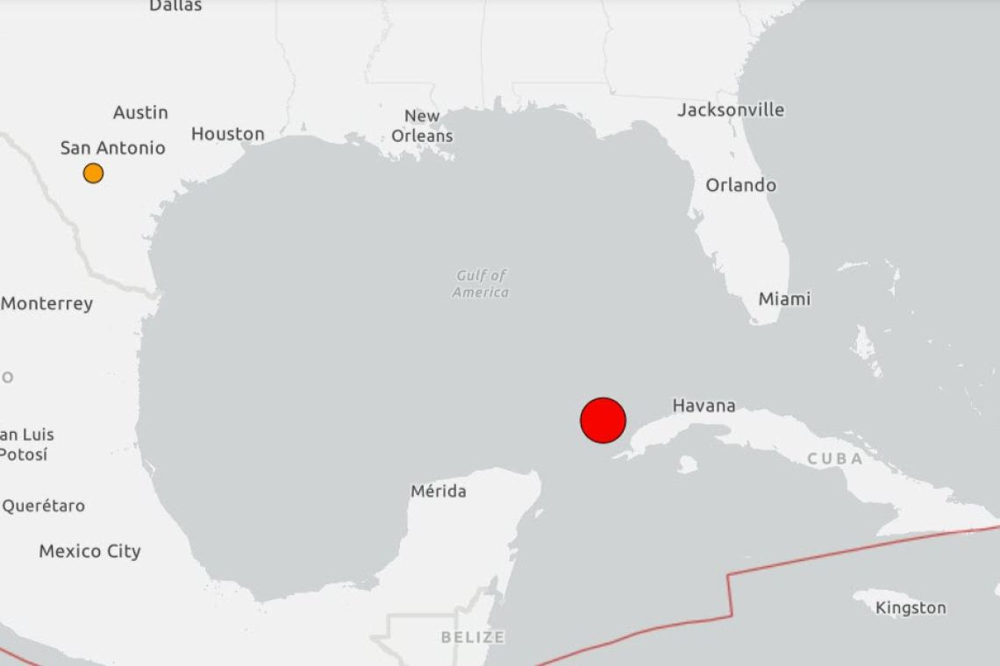
A strong magnitude 6.4 earthquake has occurred just off the western tip of Cuba. It was felt throughout Florida.
Tin foil hat folk think that... -MM
Cops Make the Worst Discovery of Their Lives
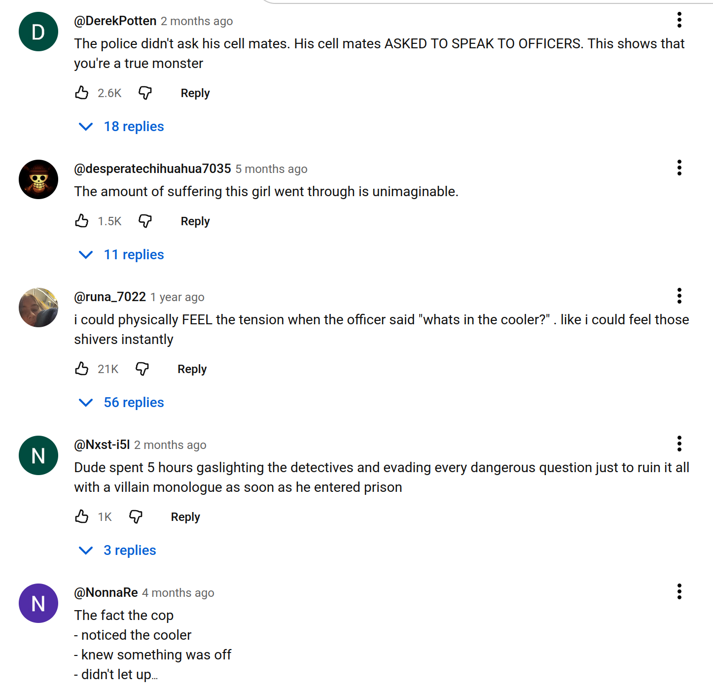
https://youtu.be/L6Igs5d-cbs